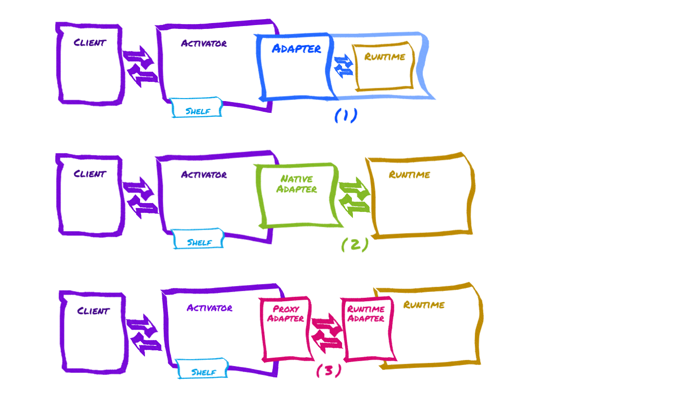

# KGrid Common Runtime Specifications
# Introduction
Every Knowledge Object (KO) contains a payload—computable artifacts—that implement some core function and can be exposed as a service when deployed to an appropriate runtime. Today there are many possible ways to deploy code, rules sets, workflows, and algorithms healthcare IT environments, and the Knowledge Grid (Kgrid)accommodates many types of computable knowledge by providing a (relatively) simple approach to integrating a wide variety of computing environments with the Kgrid core components.
This document gives an overview of how to design, develop, and use runtimes that enable specific computable knowledge to be created and deployed at scale.
# Some terms
We will refer to Computable Biomedical Knowledge (CBK) when we talk about the model, algorithm, ruleset, or decision-making logic generally. We will refer to the payload (of a KO), code, or implementation when we mean a particular instance or implementation of some piece CBK. The Knowledge Grid is generally best suited to CBK which can be characterized as one or more interactive services (e.g. question and answer or pure functions (opens new window)).
A Knowledge object (KO) contains a payload which is an implementation of the service(s) that form a particular example of CBK. We sometimes refer to the process of creating such a KO as K -> K'. What we mean by K -> K' is taking some model or algorithm (which may even already be in a computable form) and making it ready to be run as a service by describing its interactions, inputs and outputs, handling errors and exceptions, specifying how it is used with other KOs, and testing or validating its correctness and performance.
A runtime is simply a computing environment suitable for running a class of CBK implementations. For example Node.js (opens new window) is a JavaScript runtime built on Chrome's V8 JavaScript engine. A Jupyter Notebook (opens new window) installation could be a more complex runtime environment for some kinds of CBK.
When we say activation we mean the process of taking a particular implementation of CBK (the payload of a KO), deploying it in a suitable runtime environment, and then exposing its services to clients (usually other applications or systems).
The Activator is the Kgrid component responsible for activating and interacting with instances of CBK packaged as KOs. When the CBK is packaged as a payload inside a KO (along with metadata) the Activator can typically move the code to a runtime and route requests to its service(s) automatically, using a simple API.
# The motivation for allowing many CBK runtimes
THe Knowledge Grid considers implementation details like the computer language, operating system, data types, etc. to be unimportant. Only three things are required to activate a KO:
- a suitable runtime environment for the payload
- instructions (preferably automated) for deploying the payload
- a description of the interactions supported (as an OpenAPI document, for now)
Every class of CBK packaged as a knowledge object must specify the associated runtime. Runtimes are independent of the Knowledge Grid
Consider a simple example of computable knowledge, in this case the 60-Second Type 2 Diabetes Risk Test (opens new window) from the American Diabetes Association. It takes as inputs the following individual characteristics:
- Age: LESS THAN 40, 40-49, 50-59, 60 OR OLDER
- Gender: Woman, Man
- Family history (mother, father, sibling)?: Yes, No
- High Blood Pressure?: Yes, No
- Physically Active?: Yes, No
- Race or Ethnicity: [...]
- Height: ft/in or cm
- Weight: lbs or kilos
The answers to these questions are submitted, a calculation is performed, and a score from 1-10, along with a categorization of low, medium, or high risk, is returned. This same risk model could be reused in many ways—a web app for the public, embedded in an EHR system, or as a small desktop app for a counseling dietitian.
Consider also that the code for this risk model could be written in almost any computer language. It might have been done on paper once, then in a spreadsheet, then in Javascript for a web application. Maybe the researcher who developed the model for the ADA runs retrospective risk analyses on batches of patients using the same model coded in Python or R. As simple as the code would likely be, we assume that some testing and validation was done; it might be important to reuse the very same code as near as possible to avoid introducing bugs. It might be that the implementer planning a new use of the model is simply more comfortable writing code in a particular language.
As mentioned, the Activator is the Kgrid component responsible for loading KOs, deploying payloads, and routing requests to the KO's services, but the actual code or payload runs in a separate, independent runtime. As much as possible there are no restrictions on the type or use of a particular runtime; if the code runs in Python or Node.js without the Kgrid, it should run unchanged with the Kgrid. Wrapping the payload in a Knowledge Object and using a Kgrid Activator to handle deployment and request routing is a value-add, rather than a requirement.
Thus, the starting point for most CBK packed as a KO is simply code that runs in a native runtime environment, and most implementations will require little or no change to work with the Knowledge Grid.
# Adapter Modes
In order for the Activator to work with a particular runtime it needs to speak the same lingo; the Adapter needs to know the peculiarities of native deployment for that runtime, and some details about how to route requests. To handle communication between the Activator and the runtime, the Kgrid uses an Adapter class, one per runtime. (The Proxy Adapter provides a simple starting point for runtimes which can implement a proxy interface on their end).
See the individual adapter project for embedded and native adapters, and the proxy interface projects for runtimes that use the proxy adapter.

# Adapter with embedded Runtime (1)
- intro to embedded adapters
# Guidance for embedded runtime developers
- see example: see JavaScript V8 Adapter (opens new window)
- maybe how to use the Java ServiceLoader interface and set it up in
META-INF - Using the ActivationContext
# Native Adapter with runtime-specific interface to external Runtime (2)
- intro to native adapters
- Use the ActivationContext
- Pros and cons vs. the proxied runtimes
# Guidance for native adapter/runtime developers
# Proxy Adapter with standard proxy interface to external Runtime (3)
- Intro to Proxied Runtime
- uses lightweight runtime-specfic kgrid proxy interface on the runtime side
# Guidance for proxy runtime developers ((see Proxy Adapter (opens new window) for details)
# Implement this HTTP REST api
# Activation and endpoints
POST /endpointsGET /endpointsandGET /endpoints/{id}
# Status
GET /status?GET /info?GET /health
# Requests
POST /{id}
# Implement registration
- Use environment variable
KGRID_ACTIVATOR_URLto locate the Activator - USE
POST {KGRID_ACTIVATOR_URL}/runtimesto register- with body
{...}(description of my runtime) - response will be
{...}
- with body
# Common guidance and documention template for your runtime
# Guidance
Use native packaging for payloads (simplify deployment)
Follow the
runtimeandendpointresource formats used by the ActivatorAll runtimes (or adapter/runtime combos) should document the following
# Quick start (how to get the runtime running)
- for proxied runtimes assume familiarity with the OS and native execution enviroment
- For embedded adapters, refer to the adapter runtime loading docs for info on how to get an Activator to pick up your adapter
- How to hook into the Adapter lifecycle (setup, teardown, refresh); especially important for runtimes using native adapters
# How to load and run KO payloads without the Activator
- for testing
- for preloading
# Configuration & operation
- environment variables
- logging
- any special observability methods
# Developing KOs for your runtime
- native formats supported — source, jar, npm package, puthon module, csv, etc.
- Required/optional artifacts, any kgrid specific artifacts (beyond sd, dd)
- Any required/optional properties in teh deployment descriptor (beyond artifacts, engine))
- executive objects/calling other KOs
- limits on memory and performance
- differences from native code for this runtime
- dependency handling (both at activation and preloading)
- Sample objects
# Startup Behavior
- Load cache from disk (Optional)
- Register with Activator
- Handle Activation of KOs (excluding those loaded from cache)
# Caching Knowledge Objects
A runtime can optionally load Knowledge Objects from its persistence layer. The runtime can include a setting for caching strategy, for example 'Cache Always', 'Cache Never', or 'Cache With Checksum'. The Kgrid CLI will include a checksum in the deployment specification when it packages a KO. If the runtime chooses to load the cache by comparing the checksum to the last one the KO had when it was loaded, that is available.